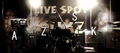

■8/4(土) 2007伊奈商工会のまつり出演
スカパラカバーバンドでベースを弾きます at 茨城県つくばみらい市（旧筑波郡伊奈町）総合運動公園 開始時間はPM3:00頃の予定
■8/10(金)、8/24(金) Anonymousソロライブ in Savoy@つくば
おなじみsavoyでの弾き語り PM 9:00～
http://mixi.jp/view_community.pl?id=613022
■8/18(土) ZAKS ライブ in マツドストック@OLINZ
今夏一番気合入れてるプロジェクト、ZAKS. King Crimsonのカバーバンドです。 そちらがお好きな向きはぜひともおいでください。